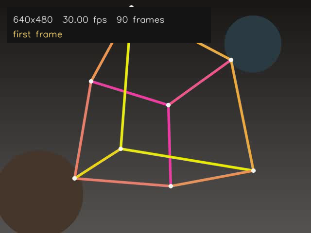
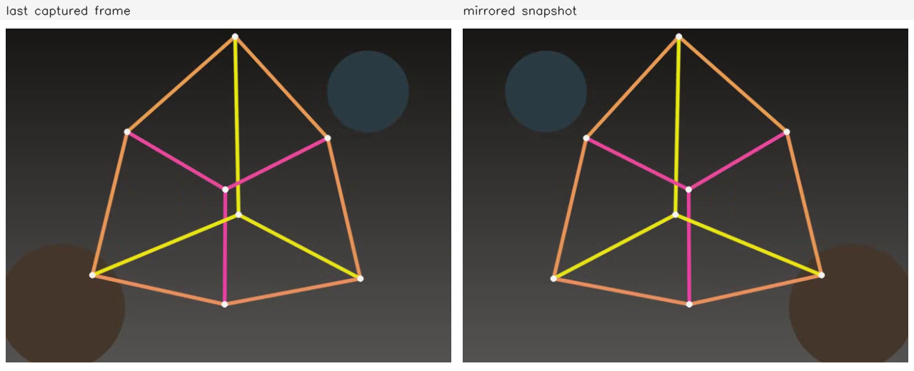
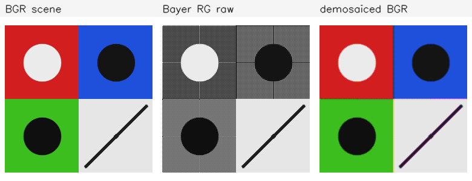
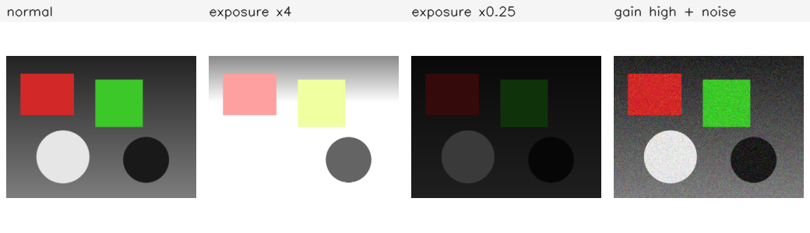

视频与相机
这一部分把图像序列读进来、处理并写出去：用 VideoCapture
打开视频文件或摄像头，用帧循环处理每一帧，用 VideoWriter
保存结果；最后读懂工业相机的取图流程、参数与像素格式。前四课要求会写，
后三课以读懂结构和格式为主。
需要先读 0.4，会读图、显示与保存；
读 1.1，知道 Mat
的浅拷贝与 clone 的区别；读
1.2，会按路径读入图像并检查
empty；读 1.5，
会在帧上绘制标注。视频帧、相机帧与普通图像共用同一套 Mat
操作。
下面的命令在课程文件夹 lessons/opencv（本页所在目录）下执行。
/tmp 是系统存放临时文件的目录，电脑重启后可能被清空。
如果没有按第 0 部分 0.1 准备过练习目录，或者准备之后重启过电脑，
先执行下面几行，再开始这一部分：
rm -rf /tmp/opencv-course
mkdir -p /tmp/opencv-course
cp -r 示例代码 素材 /tmp/opencv-course/
cd /tmp/opencv-course/示例代码
第一行会删除整个练习副本，路径不要改成自己的目录。复制完成后，
用 pwd 确认当前目录是 /tmp/opencv-course/示例代码。
5.1VideoCapture：打开视频
视频文件保存的是按时间排列的一串图像帧，外面还有容器与编码信息。
容器负责把帧、时间戳和索引放在一起，编码器负责压缩每一帧。OpenCV
读文件时不要求调用者处理这些封装细节，读出的每一帧仍然是
cv::Mat，通道顺序仍是 BGR。
视频文件、容器与帧
cv::VideoCapture 负责打开视频源、解码并交出下一帧。打开文件
时给出路径与后端标志：
cv::VideoCapture cap("../素材/cube.mp4", cv::CAP_ANY);
if (!cap.isOpened()) {
std::cout << "无法打开视频" << '\n';
return 1;
}
第二个参数是后端（backend），cv::CAP_ANY 表示让 OpenCV
自行选择。同一台机器上，文件与摄像头可能走不同后端；后端只影响打开方式，
读出的帧仍是 cv::Mat。路径写相对路径时，基准是程序运行时的
工作目录，不是源文件所在目录。从 示例代码 目录运行程序，
../素材/cube.mp4 才指向素材目录。
isOpened() 只在打开动作之后有意义。它返回 true
表示后端已经建立了可读的连接；文件存在但编码器缺失、设备被占用，都会让
它返回 false。打开成功以后，用 cap >> frame
读取下一帧。到达文件末尾、相机断流或解码失败时，frame.empty()
为真。判断结束要用这一条件，不能只看当前帧号。
打开后可以读取元数据。它们都以 double 返回，单位随属性变化：
| 属性 | 含义 | 单位或说明 |
|---|---|---|
CAP_PROP_FRAME_WIDTH | 帧宽 | 像素 |
CAP_PROP_FRAME_HEIGHT | 帧高 | 像素 |
CAP_PROP_FPS | 标称帧率 | 帧/秒 |
CAP_PROP_FRAME_COUNT | 文件总帧数 | 帧；摄像头通常为 0 |
属性不被当前后端支持时，get 返回 0，而不是报错。因此看到
宽高为 0，先确认 isOpened()，再确认后端是否提供这项属性。
文件的总帧数也可能因为容器缺少索引而不准确；逐帧读到 empty
才是可靠的结束条件。
元数据与第一帧
素材/cube.mp4 是课程合成的视频：640×480、30 帧每秒、共 90 帧，
画面是一个旋转的线框立方体，位置与颜色固定。下面的程序打开它，打印元数据，
读取第一帧，在帧上写一行摘要并保存为 PNG。
完整程序：
#include <iomanip>
#include <iostream>
#include <string>
#include <opencv2/core.hpp>
#include <opencv2/imgproc.hpp>
#include <opencv2/imgcodecs.hpp>
#include <opencv2/videoio.hpp>
int main() {
const std::string path = "../素材/cube.mp4";
cv::VideoCapture cap(path, cv::CAP_ANY);
if (!cap.isOpened()) {
std::cout << "无法打开 " << path << '\n';
return 1;
}
const double width = cap.get(cv::CAP_PROP_FRAME_WIDTH);
const double height = cap.get(cv::CAP_PROP_FRAME_HEIGHT);
const double fps = cap.get(cv::CAP_PROP_FPS);
const double frames = cap.get(cv::CAP_PROP_FRAME_COUNT);
std::cout << "opened=1" << '\n';
std::cout << "width=" << cvRound(width) << " height=" << cvRound(height)
<< " fps=" << std::fixed << std::setprecision(2) << fps
<< " frames=" << cvRound(frames) << '\n';
cv::Mat frame;
cap >> frame;
if (frame.empty()) {
std::cout << "读取第一帧失败" << '\n';
return 1;
}
std::cout << "first frame=" << frame.cols << "x" << frame.rows << '\n';
std::cout << "position=" << cvRound(cap.get(cv::CAP_PROP_POS_FRAMES))
<< '\n';
cv::Mat shown = frame.clone();
cv::Mat bar(74, 420, CV_8UC3, cv::Scalar(20, 20, 20));
bar.copyTo(shown(cv::Rect(14, 14, bar.cols, bar.rows)));
cv::putText(shown,
cv::format("%dx%d %.2f fps %d frames", frame.cols,
frame.rows, fps, cvRound(frames)),
cv::Point(26, 46), cv::FONT_HERSHEY_SIMPLEX, 0.60,
cv::Scalar(235, 235, 235), 1, cv::LINE_AA);
cv::putText(shown, "first frame", cv::Point(26, 76),
cv::FONT_HERSHEY_SIMPLEX, 0.60, cv::Scalar(120, 220, 255), 1,
cv::LINE_AA);
const bool saved = cv::imwrite("../素材/out_first_frame.png", shown);
std::cout << "saved out_first_frame.png: " << (saved ? "yes" : "no")
<< '\n';
return 0;
}在 示例代码 目录下编译并运行：
g++ -std=c++17 -Wall -Wextra 5.1-video_capture.cpp -o video_info \
$(pkg-config --cflags --libs opencv4)
./video_infoopened=1 width=640 height=480 fps=30.00 frames=90 first frame=640x480 position=1 saved out_first_frame.png: yes
opened=1 来自 isOpened()；第二行来自
get：宽 640、高 480、帧率 30.00、总帧数 90；第三行
first frame=640x480 来自 frame.size()。
第一次 cap >> frame 读出第 1 帧，帧尺寸与元数据一致。
position=1 来自 get(CAP_PROP_POS_FRAMES)，
表示下一次读取会从第 2 帧开始：帧号从 0 开始数，读完一帧后位置前进一格。
最后一行来自 imwrite；保存的 out_first_frame.png
是带摘要条的第一帧，不是原视频的副本。

putText
写入，保存的是叠加后的图像；原始帧没有这几个字。
摘要中的 640×480、30.00 fps 与 90 frames 都来自 get 的返回值，
不是手写在程序里的常量。换一段视频，这三个数随之变化；程序不需要改。
如果这三个数与播放器显示的不同，以 OpenCV 读回的值为准，再检查后端是否
正确识别了文件。
路径与打开失败
打开失败最常见的原因与路径有关。相对路径以运行程序时的目录为基准；
在编辑器里点运行与在终端里先 cd 再运行，工作目录可能不同。
路径中的目录分隔符、文件名大小写与扩展名都要与磁盘一致。文件确实存在，
但当前 OpenCV 构建缺少对应的解码器时，isOpened() 同样返回
false；这类失败不能靠再读一次帧解决。
另一个容易忽略的错误，是把文件路径写成整数。整数会被解释为摄像头索引：
cv::VideoCapture cap(0) 尝试打开第 0 号摄像头，而不是名为
0 的文件。反过来，把摄像头索引写成字符串，则会按文件路径
查找。两种写法都能编译，错误只在运行时以 isOpened() == false
的形式出现。
打开失败后不要再调用 get 推测内容，也不要继续读帧。先打印
路径和 isOpened()，确认打开的是预期对象；再检查文件能否被
其他播放器解码。读取循环结束时，VideoCapture 的析构函数会
释放后端资源；需要提前释放或重新打开时，调用 release()。
题目：默认构造一个 VideoCapture，再打开
../素材/cube.mp4。对两个对象都打印
isOpened()、宽、高、总帧数与帧率，观察未打开对象上的
get 返回什么。
完整程序：
#include <iomanip>
#include <iostream>
#include <string>
#include <opencv2/core.hpp>
#include <opencv2/videoio.hpp>
void report(const std::string& title, cv::VideoCapture& cap) {
std::cout << title << " opened=" << (cap.isOpened() ? 1 : 0);
std::cout << " width=" << cvRound(cap.get(cv::CAP_PROP_FRAME_WIDTH));
std::cout << " height=" << cvRound(cap.get(cv::CAP_PROP_FRAME_HEIGHT));
std::cout << " frames=" << cvRound(cap.get(cv::CAP_PROP_FRAME_COUNT));
std::cout << " fps=" << std::fixed << std::setprecision(2)
<< cap.get(cv::CAP_PROP_FPS) << '\n';
}
int main() {
cv::VideoCapture closed;
report("closed", closed);
cv::VideoCapture good("../素材/cube.mp4");
report("good", good);
return 0;
}在 示例代码 目录下编译并运行：
g++ -std=c++17 -Wall -Wextra 5.1-eg-open_check.cpp -o eg_open_check \
$(pkg-config --cflags --libs opencv4)
./eg_open_checkclosed opened=0 width=0 height=0 frames=0 fps=0.00 good opened=1 width=640 height=480 frames=90 fps=30.00
默认构造的对象没有连接任何视频源，isOpened() 为 0，四个
属性都读成 0。对未打开的对象调用 get 不会让程序中止，
但返回的数字没有意义。第二个对象打开成功，宽高、总帧数与帧率都与文件
一致。检查顺序应当固定为：先看 isOpened()，再使用
get 的值。
打开 ../素材/cube.mp4，打印宽、高、帧率与总帧数；把读取位置
设到第 44 帧，读一帧，打印 set 的返回值、读取后的帧号、
时间戳（毫秒）与画面中心像素的 BGR 值；随后继续读到文件结束，打印从
这一帧起一共解码了多少帧。本题不需要标准输入，数据直接写在
main 里。
预期输出：
opened=1 width=640 height=480 fps=30.00 frames=90 seek=1 pos=45 timestamp_ms=1467 center=(51,53,55) decoded=46
看答案
set 把读取位置放到第 44 帧（从 0 开始数），下一次读取得到第 45 帧，读完后 pos=45。时间戳约 1467 毫秒，中心像素取画面几何中心。随后从这一帧继续读到结尾，共解码 46 帧，即第 45 帧至第 90 帧。返回值 1 表示后端接受了定位请求，不表示所有属性都可以修改。
#include <iomanip>
#include <iostream>
#include <opencv2/core.hpp>
#include <opencv2/videoio.hpp>
int main() {
cv::VideoCapture cap("../素材/cube.mp4", cv::CAP_ANY);
if (!cap.isOpened()) {
std::cout << "无法打开视频" << '\n';
return 1;
}
std::cout << "opened=1 width="
<< cvRound(cap.get(cv::CAP_PROP_FRAME_WIDTH)) << " height="
<< cvRound(cap.get(cv::CAP_PROP_FRAME_HEIGHT)) << " fps="
<< std::fixed << std::setprecision(2)
<< cap.get(cv::CAP_PROP_FPS) << " frames="
<< cvRound(cap.get(cv::CAP_PROP_FRAME_COUNT)) << '\n';
const bool moved = cap.set(cv::CAP_PROP_POS_FRAMES, 44);
cv::Mat frame;
cap >> frame;
if (frame.empty()) {
std::cout << "读取失败" << '\n';
return 1;
}
const cv::Vec3b center =
frame.at<cv::Vec3b>(frame.rows / 2, frame.cols / 2);
std::cout << "seek=" << moved
<< " pos=" << cvRound(cap.get(cv::CAP_PROP_POS_FRAMES))
<< " timestamp_ms=" << cvRound(cap.get(cv::CAP_PROP_POS_MSEC))
<< " center=(" << static_cast<int>(center[0]) << ","
<< static_cast<int>(center[1]) << ","
<< static_cast<int>(center[2]) << ")" << '\n';
int decoded = 1;
while (true) {
cap >> frame;
if (frame.empty()) {
break;
}
++decoded;
}
std::cout << "decoded=" << decoded << '\n';
return 0;
}opened=1 width=640 height=480 fps=30.00 frames=90 seek=1 pos=45 timestamp_ms=1467 center=(51,53,55) decoded=46
你现在能写什么：用 VideoCapture 打开视频文件，检查
isOpened()；读取宽、高、帧率与总帧数；读取第一帧并保存；
设置读取位置并解释读取后的帧号；区分文件路径与摄像头索引，判断打开失败
来自路径、编码器还是对象类型。
5.2摄像头：打开、参数与采集
摄像头与视频文件在代码层几乎是同一个对象：用 VideoCapture
打开，用 operator>> 取下一帧。区别在打开参数与可用属性。
摄像头没有固定的总帧数，分辨率与帧率也由设备支持的模式决定。下面的程序
先尝试摄像头，失败时回退到课程视频，两条路径共用后面的读取、镜像与保存。
设备索引与打开
打开摄像头时，传给构造函数的整数是设备索引。索引 0 表示系统枚举到的第一个 摄像头，1 表示第二个，依此类推。索引不是设备型号，也不保证与机身上的编号 一致。程序不应当假定某个索引一定存在：
cv::VideoCapture cap;
cap.open(0, cv::CAP_V4L2);
if (!cap.isOpened()) {
std::cout << "摄像头不可用" << '\n';
}
Linux 上摄像头通常走 V4L2 后端。也可以写 cv::CAP_ANY 让
OpenCV 自选，但部分环境会选中 GStreamer；这些 GStreamer 版本在打开后
设置宽高时可能停掉采集管线，isOpened() 仍为真，后续读取却
全部为空。因此本课先明确指定 CAP_V4L2，打不开时再退回
CAP_ANY。
isOpened() 为真只说明设备已经建立连接，不说明第一帧一定能
按时到达。设备被其他程序占用、索引指向不存在的设备、驱动没有提供可读格式，
都会让打开失败。打开成功但连续读不到帧时，仍要按断流处理，检查
frame.empty()，必要时释放后改用视频文件。
没有摄像头时，后续程序用 --no-camera 跳过设备，直接读取
视频文件；读取、镜像、保存与参数读回的代码与摄像头路径相同。
这样没有硬件的读者也能完成帧循环。
请求参数与实际参数
打开后可以用 set 请求宽、高与帧率。返回值表示后端是否接受了
这次请求，不等同于设备已经按该值输出。设备只支持若干离散分辨率时，请求
1280×720 可能被改成 640×480；自动曝光或带宽限制也可能把实际帧率压低。
因此每次 set 之后都要用 get 读回实际值：
const bool ok_width = cap.set(cv::CAP_PROP_FRAME_WIDTH, 1280);
const double actual_width = cap.get(cv::CAP_PROP_FRAME_WIDTH);
文件后端通常不支持修改帧尺寸或帧率，set 返回
false，实际值仍是文件本身的值。相机可能接受部分请求，也可能
全部拒绝。后续计算像素坐标、视场或标定参数时，必须使用读回的实际宽高，
不能使用请求值。打印请求值与实际值并排，是排查这类问题最快的方法。
采集、镜像与保存
下面的程序请求 1280×720、30 帧每秒，连续读取 5 帧，保留最后一帧，做左右
镜像，保存单帧快照与两格对比图。没有摄像头或读取不到帧时，程序自动改用
cube.mp4，保证同一段流程可以运行。两条路径默认都会弹出结果
窗口；没有图形界面或做自动核对时，加 --no-window 关闭窗口。
完整程序：
#include <algorithm>
#include <cstring>
#include <iomanip>
#include <iostream>
#include <string>
#include <opencv2/core.hpp>
#include <opencv2/imgproc.hpp>
#include <opencv2/imgcodecs.hpp>
#include <opencv2/highgui.hpp>
#include <opencv2/videoio.hpp>
namespace {
void place(cv::Mat& panel, const cv::Mat& image, int x, int y, int width,
int height, const std::string& label) {
const int label_height = 28;
cv::rectangle(panel, cv::Rect(x, y, width, label_height),
cv::Scalar(245, 245, 245), cv::FILLED);
cv::putText(panel, label, cv::Point(x + 8, y + 20),
cv::FONT_HERSHEY_SIMPLEX, 0.55, cv::Scalar(30, 30, 30), 1,
cv::LINE_AA);
const int inner_width = width - 16;
const int inner_height = height - label_height - 16;
const double scale = std::min(static_cast<double>(inner_width) / image.cols,
static_cast<double>(inner_height) / image.rows);
const int shown_width = std::max(1, cvRound(image.cols * scale));
const int shown_height = std::max(1, cvRound(image.rows * scale));
cv::Mat shown;
cv::resize(image, shown, cv::Size(shown_width, shown_height), 0, 0,
cv::INTER_AREA);
const int left = x + (width - shown_width) / 2;
const int top = y + label_height + (inner_height - shown_height) / 2 + 8;
shown.copyTo(panel(cv::Rect(left, top, shown_width, shown_height)));
}
} // namespace
int main(int argc, char** argv) {
bool try_camera = true;
bool show_window = true;
for (int i = 1; i < argc; ++i) {
if (std::strcmp(argv[i], "--no-camera") == 0) {
try_camera = false;
} else if (std::strcmp(argv[i], "--no-window") == 0) {
show_window = false;
}
}
cv::VideoCapture cap;
std::string mode = "video";
if (try_camera) {
// Linux 上优先用 V4L2。CAP_ANY 可能选中 GStreamer，部分 GStreamer
// 版本在设置宽高时会停掉采集管线，之后所有帧都为空。
cap.open(0, cv::CAP_V4L2);
if (!cap.isOpened()) {
cap.open(0, cv::CAP_ANY);
}
if (cap.isOpened()) {
mode = "camera";
} else {
std::cout << "camera open failed, using video" << '\n';
}
}
if (!cap.isOpened()) {
mode = "video";
cap.open("../素材/cube.mp4", cv::CAP_ANY);
}
if (!cap.isOpened()) {
std::cout << "无法打开视频" << '\n';
return 1;
}
const bool set_width = cap.set(cv::CAP_PROP_FRAME_WIDTH, 1280);
const bool set_height = cap.set(cv::CAP_PROP_FRAME_HEIGHT, 720);
const bool set_fps = cap.set(cv::CAP_PROP_FPS, 30);
cv::Mat last;
int frames = 0;
for (int i = 0; i < 5; ++i) {
cv::Mat frame;
cap >> frame;
if (frame.empty()) {
break;
}
last = frame.clone();
++frames;
}
if (frames == 0 && mode == "camera") {
std::cout << "camera gave no frame, using video" << '\n';
cap.release();
cap.open("../素材/cube.mp4", cv::CAP_ANY);
mode = "video";
for (int i = 0; i < 5; ++i) {
cv::Mat frame;
cap >> frame;
if (frame.empty()) {
break;
}
last = frame.clone();
++frames;
}
}
const double width = cap.get(cv::CAP_PROP_FRAME_WIDTH);
const double height = cap.get(cv::CAP_PROP_FRAME_HEIGHT);
const double fps = cap.get(cv::CAP_PROP_FPS);
std::cout << "mode=" << mode << '\n';
std::cout << "set width=" << set_width << " height=" << set_height
<< " fps=" << set_fps << '\n';
std::cout << "requested=1280x720 fps=30.00" << '\n';
std::cout << "actual=" << cvRound(width) << "x" << cvRound(height)
<< " fps=" << std::fixed << std::setprecision(2) << fps << '\n';
std::cout << "frames=" << frames << '\n';
if (last.empty()) {
std::cout << "没有读到帧" << '\n';
return 1;
}
cv::Mat mirrored;
cv::flip(last, mirrored, 1);
const bool saved_jpg = cv::imwrite("../素材/snapshot.jpg", mirrored);
cv::Mat panel(520, 1280, CV_8UC3, cv::Scalar(255, 255, 255));
place(panel, last, 0, 0, 640, 520, "last captured frame");
place(panel, mirrored, 640, 0, 640, 520, "mirrored snapshot");
const bool saved_png = cv::imwrite("../素材/out_camera.png", panel);
std::cout << "saved snapshot.jpg: " << (saved_jpg ? "yes" : "no") << '\n';
std::cout << "saved out_camera.png: " << (saved_png ? "yes" : "no")
<< '\n';
if (show_window) {
if (mode == "camera") {
cv::imshow("snapshot", mirrored);
} else {
cv::imshow("camera fallback", panel);
}
std::cout << "press any key in the window to close" << '\n';
cv::waitKey(0);
}
return 0;
}
没有摄像头时，--no-camera 跳过设备并在窗口中显示回退结果。
下面的真实输出额外加了 --no-window，避免程序等待按键：
g++ -std=c++17 -Wall -Wextra 5.2-camera.cpp -o camera \
$(pkg-config --cflags --libs opencv4)
./camera --no-camera --no-windowmode=video set width=0 height=0 fps=0 requested=1280x720 fps=30.00 actual=640x480 fps=30.00 frames=5 saved snapshot.jpg: yes saved out_camera.png: yes
mode=video 表示当前走的是文件路径；三个 set
都返回 0，说明文件后端不接受修改，实际值仍是 640×480、30.00 fps。
frames=5 是成功读到的帧数，快照取自第 5 帧。程序把镜像后的
最后一帧写到 素材/snapshot.jpg，把原帧与镜像帧拼成
out_camera.png。

--no-camera 的回退路径，用于核对镜像与保存；它们不是摄像头
拍摄的画面。
有摄像头时直接运行 ./camera，不要加 --no-camera。
程序会打印 mode=camera，随后三行是设备接受请求的情况，
actual 的宽高与帧率随设备变化，不能照抄下面的回退值。读取
5 帧后，程序弹出标题为 snapshot 的窗口，显示镜像后的画面，
按任意键关闭；关闭前已经把同一帧保存为 素材/snapshot.jpg。
若只想核对输出、不打开窗口，加 --no-window。
打开摄像头的这一份需要读者亲自运行，前提是自己的机器上有摄像头，
教材只给出回退路径的真实输出。程序会自动保存 snapshot.jpg，不需要额外按键，
也没有必须提交的截图。若确实需要保留窗口画面，可以在窗口出现后用系统
截图工具截取；更直接的办法是保留程序写出的
snapshot.jpg，摄像头路径的窗口显示的就是同一帧镜像结果。
两条路径默认都会弹出窗口并在关闭前等待。摄像头路径的窗口标题为
snapshot，显示镜像后的画面；文件回退路径的窗口标题为
camera fallback，显示原帧与镜像帧的两格对比图。加
--no-window 后两条路径都不建窗口，读完 5 帧就结束。两种路径
都会调用 release 或由析构函数释放设备。窗口标题只用于识别
这一份程序，不是文件路径的一部分。
失败处理与释放
摄像头失败通常有四类：设备被其他程序占用，索引指向不存在的设备，请求的
分辨率或像素格式不受支持，以及当前用户没有读取设备的权限。前三类可以在
程序内检测：打开后检查 isOpened()，设置后读回实际值，读取后
检查 empty()。权限问题会表现为打开失败，本课不通过修改系统
配置解决，直接改用视频文件完成同一段流程。
没有摄像头而直接运行 ./camera 时，程序会先尝试设备，失败后
回退到视频。某些后端会把设备错误写到标准错误，终端里因此出现额外的警告；
程序自己的输出仍在标准输出，以 mode=video 开头的那几行为准。
回退不是异常处理的替代品：真实项目应当在界面上说明当前使用的是相机还是
文件，避免把回退画面误当成实时画面。
需要切换设备或重新打开文件时，先调用 release()。同一对象再次
open 也可以，但先释放更容易确认上一路资源已经归还。读取循环
结束后不需要手动释放局部对象，析构函数会处理。
题目：用视频文件模拟“请求参数”的流程。打开
../素材/cube.mp4，请求 1280×720、30 帧每秒，打印三个
set 的返回值、请求值与读回的实际值；读取第一帧，左右镜像，
保存为 out_eg_camera.png。
完整程序：
#include <iomanip>
#include <iostream>
#include <opencv2/core.hpp>
#include <opencv2/imgproc.hpp>
#include <opencv2/imgcodecs.hpp>
#include <opencv2/videoio.hpp>
int main() {
cv::VideoCapture cap("../素材/cube.mp4", cv::CAP_ANY);
std::cout << "opened=" << (cap.isOpened() ? 1 : 0) << '\n';
if (!cap.isOpened()) {
return 1;
}
const bool set_width = cap.set(cv::CAP_PROP_FRAME_WIDTH, 1280);
const bool set_height = cap.set(cv::CAP_PROP_FRAME_HEIGHT, 720);
const bool set_fps = cap.set(cv::CAP_PROP_FPS, 30);
std::cout << "set width=" << set_width << " height=" << set_height
<< " fps=" << set_fps << '\n';
std::cout << "requested=1280x720 fps=30.00" << '\n';
std::cout << "actual=" << cvRound(cap.get(cv::CAP_PROP_FRAME_WIDTH))
<< "x" << cvRound(cap.get(cv::CAP_PROP_FRAME_HEIGHT))
<< " fps=" << std::fixed << std::setprecision(2)
<< cap.get(cv::CAP_PROP_FPS) << '\n';
cv::Mat frame;
cap >> frame;
if (frame.empty()) {
std::cout << "没有读到帧" << '\n';
return 1;
}
cv::Mat mirrored;
cv::flip(frame, mirrored, 1);
const bool saved = cv::imwrite("out_eg_camera.png", mirrored);
std::cout << "saved out_eg_camera.png: " << (saved ? "yes" : "no")
<< '\n';
return 0;
}在 示例代码 目录下编译并运行：
g++ -std=c++17 -Wall -Wextra 5.2-eg-readback.cpp -o eg_readback \
$(pkg-config --cflags --libs opencv4)
./eg_readbackopened=1 set width=0 height=0 fps=0 requested=1280x720 fps=30.00 actual=640x480 fps=30.00 saved out_eg_camera.png: yes
文件后端没有改变帧尺寸的能力，三个 set 都返回 0；实际值仍是
640×480、30.00 fps。程序没有把请求值当成实际值，而是重新
get 一次。换成一台支持 1280×720 的摄像头时，
set 可能返回 1，actual 也可能仍是 1280×720，
具体结果由设备决定。读回这一步在两种情况下都不能省。
用视频文件模拟摄像头参数回读：打开 ../素材/cube.mp4，请求
320×240、15 帧每秒，打印三个 set 的结果与读回的实际宽高、
帧率；把读取位置设到第 20 帧，读一帧并左右镜像，打印读取后的帧号与尺寸，
以及原图 (100,100) 和镜像图 (100,539) 的 BGR
值；把镜像图保存为 out_ex_5_2.png。本题不需要标准输入，
数据直接写在 main 里。
预期输出：
set=0/0/0 actual=640x480 fps=30.00 pos=21 size=640x480 original(100,100)=(33,35,37) mirrored(100,539)=(33,35,37) saved out_ex_5_2.png: yes
看答案
文件后端不接受尺寸与帧率修改，三个 set 都是 0，实际值仍是 640×480、30.00 fps。定位到第 20 帧后读取，得到第 21 帧。flip(..., 1) 做左右镜像，镜像图中横坐标 639-x 对应原图的 x，所以原图 (100,100) 与镜像图 (100,539) 的像素相同。保存的是镜像图。
#include <iomanip>
#include <iostream>
#include <opencv2/core.hpp>
#include <opencv2/imgproc.hpp>
#include <opencv2/imgcodecs.hpp>
#include <opencv2/videoio.hpp>
int main() {
cv::VideoCapture cap("../素材/cube.mp4", cv::CAP_ANY);
if (!cap.isOpened()) {
std::cout << "无法打开视频" << '\n';
return 1;
}
const bool set_width = cap.set(cv::CAP_PROP_FRAME_WIDTH, 320);
const bool set_height = cap.set(cv::CAP_PROP_FRAME_HEIGHT, 240);
const bool set_fps = cap.set(cv::CAP_PROP_FPS, 15);
std::cout << "set=" << set_width << "/" << set_height << "/" << set_fps
<< " actual=" << cvRound(cap.get(cv::CAP_PROP_FRAME_WIDTH))
<< "x" << cvRound(cap.get(cv::CAP_PROP_FRAME_HEIGHT))
<< " fps=" << std::fixed << std::setprecision(2)
<< cap.get(cv::CAP_PROP_FPS) << '\n';
cap.set(cv::CAP_PROP_POS_FRAMES, 20);
cv::Mat frame;
cap >> frame;
if (frame.empty()) {
std::cout << "读取失败" << '\n';
return 1;
}
cv::Mat mirrored;
cv::flip(frame, mirrored, 1);
const cv::Vec3b left = frame.at<cv::Vec3b>(100, 100);
const cv::Vec3b right = mirrored.at<cv::Vec3b>(100, 539);
std::cout << "pos=" << cvRound(cap.get(cv::CAP_PROP_POS_FRAMES))
<< " size=" << frame.cols << "x" << frame.rows << '\n';
std::cout << "original(100,100)=(" << static_cast<int>(left[0]) << ","
<< static_cast<int>(left[1]) << ","
<< static_cast<int>(left[2]) << ")"
<< " mirrored(100,539)=(" << static_cast<int>(right[0]) << ","
<< static_cast<int>(right[1]) << ","
<< static_cast<int>(right[2]) << ")" << '\n';
const bool saved = cv::imwrite("out_ex_5_2.png", mirrored);
std::cout << "saved out_ex_5_2.png: " << (saved ? "yes" : "no") << '\n';
return 0;
}set=0/0/0 actual=640x480 fps=30.00 pos=21 size=640x480 original(100,100)=(33,35,37) mirrored(100,539)=(33,35,37) saved out_ex_5_2.png: yes
你现在能写什么：用设备索引打开摄像头，检查 isOpened()；
请求宽、高与帧率并读回实际值；读取若干帧，左右镜像并保存快照；在没有
摄像头时回退到视频文件；识别设备占用、索引错误、分辨率不支持与权限不足，
并在切换设备前释放资源。
5.3帧循环、按键与帧率
视频处理的主体是一个循环：取一帧，处理一帧，再决定是否继续。循环必须有
明确的结束条件，否则文件读完以后程序会停在原地，或者窗口关不掉。这一课
把读取、显示、按键、暂停与帧率计算放进同一个结构，并用
--no-window 提供一条不依赖窗口的运行路径。
帧循环与退出条件
最基本的循环只依赖 empty()：
while (true) {
cv::Mat frame;
cap >> frame;
if (frame.empty()) {
break;
}
// 处理 frame
}
文件读到末尾时，operator>> 交出的帧为空；相机断电或断流时
也一样。这个条件同时覆盖正常结束与读取失败，适合作为循环的底线。需要限制
处理数量时，再叠加帧数上限，例如只处理前 100 帧。不要用
CAP_PROP_FRAME_COUNT 作为唯一条件：摄像头通常返回 0，部分容器
的总帧数也不准确。
退出条件还应当包含用户输入。只靠 empty() 的窗口程序，在实时
摄像头下永远不会自己结束，用户必须能按键退出。按键读取与帧读取在同一个
循环里完成，顺序通常是先取帧，再显示，再读键，最后决定是否 break。
按键、暂停与时间戳
cv::waitKey(delay) 等待键盘事件，返回按键的编码；在等待期间
它也让 GUI 有机会刷新窗口。delay 的单位是毫秒：给 1 表示最多
等 1 毫秒，适合连续播放；给 0 表示一直等到有按键。没有按键时返回 -1。
常见按键值是 ESC 的 27、空格 32、字母 q 的 113。
下面的程序播放 cube.mp4。有窗口时按视频帧率控制显示间隔，
按空格切换暂停，按 q 或 ESC 退出；--no-window
跳过显示与按键，只跑解码与计时，用于自动核对。程序在第 1、30、60、90 帧
打印时间戳与帧号，最后打印总耗时与平均帧率。
完整程序：
#include <algorithm>
#include <cmath>
#include <cstring>
#include <iomanip>
#include <iostream>
#include <opencv2/core.hpp>
#include <opencv2/highgui.hpp>
#include <opencv2/videoio.hpp>
int main(int argc, char** argv) {
bool show_window = true;
for (int i = 1; i < argc; ++i) {
if (std::strcmp(argv[i], "--no-window") == 0) {
show_window = false;
}
}
cv::VideoCapture cap("../素材/cube.mp4", cv::CAP_ANY);
if (!cap.isOpened()) {
std::cout << "无法打开视频" << '\n';
return 1;
}
const double fps = cap.get(cv::CAP_PROP_FPS);
const int total = cvRound(cap.get(cv::CAP_PROP_FRAME_COUNT));
std::cout << "opened=1 total=" << total << " fps=" << std::fixed
<< std::setprecision(2) << fps << '\n';
const int delay = std::max(1, cvRound(1000.0 / fps));
const int64 start = cv::getTickCount();
int processed = 0;
bool paused = false;
while (true) {
cv::Mat frame;
cap >> frame;
if (frame.empty()) {
break;
}
++processed;
const int position = cvRound(cap.get(cv::CAP_PROP_POS_FRAMES));
const int timestamp = cvRound(cap.get(cv::CAP_PROP_POS_MSEC));
if (position == 1 || position % 30 == 0) {
std::cout << "sample frame=" << position << " pos=" << position
<< " timestamp_ms=" << timestamp << '\n';
}
if (show_window) {
cv::imshow("frame loop", frame);
const int key = cv::waitKey(paused ? 0 : delay);
if (key == 27 || key == 'q') {
break;
}
if (key == ' ') {
paused = !paused;
}
}
}
const int64 end = cv::getTickCount();
const double elapsed_ms =
1000.0 * static_cast<double>(end - start) / cv::getTickFrequency();
const double average_fps =
elapsed_ms > 0.0 ? processed * 1000.0 / elapsed_ms : 0.0;
std::cout << "processed=" << processed << " elapsed_ms=" << std::fixed
<< std::setprecision(1) << elapsed_ms
<< " avg_fps=" << std::setprecision(2) << average_fps << '\n';
if (show_window) {
cv::destroyAllWindows();
}
return 0;
}
先编译。播放窗口需要图形界面，由读者在自己的桌面上运行；自动核对使用
--no-window：
g++ -std=c++17 -Wall -Wextra 5.3-frame_loop.cpp -o frame_loop \
$(pkg-config --cflags --libs opencv4)
./frame_loop --no-windowopened=1 total=90 fps=30.00 sample frame=1 pos=1 timestamp_ms=0 sample frame=30 pos=30 timestamp_ms=967 sample frame=60 pos=60 timestamp_ms=1967 sample frame=90 pos=90 timestamp_ms=2967 processed=90 elapsed_ms=25.7 avg_fps=3501.69
四个 sample 行对应第 1、30、60、90 帧。第一帧的时间戳是 0，
之后每帧增加约 33 毫秒：30 帧处为 967 毫秒，60 帧处为 1967 毫秒，
90 帧处为 2967 毫秒。时间戳由后端按文件帧率给出，不是程序自己按帧号乘
出来的。读取一帧后，pos 等于下一帧的 0 基索引：读完第 1 帧后
pos=1，下一次读取的是第 2 帧。
processed=90 表示 90 帧全部读到。最后一行的
elapsed_ms 与 avg_fps 每次运行都会变化，它们
取决于机器速度、当时负载与是否显示窗口；上面的数字只是一次运行的结果。
不带 --no-window 时，每帧还要等待约 33 毫秒用于显示，
平均帧率会接近 30，而不是这里的几千。两种数字都真实，含义不同：前者是
解码与处理的吞吐，后者是受显示节奏限制的播放帧率。
直接运行 ./frame_loop 会打开播放窗口。按空格暂停，再按一次
继续；暂停时程序停在 waitKey(0)，不会继续解码。按
q 或 ESC 立即退出。窗口关闭后，程序仍会打印总耗时与平均
帧率。没有图形界面时使用 --no-window，不要反复尝试打开窗口。
waitKey 的返回值要与字符常量比较，不能与字符串比较。窗口没有
获得焦点时，按键可能收不到；这是窗口系统的焦点问题，不是循环写错。若程序
看起来“卡住”，先确认是否在 waitKey(0) 上等待按键。
帧率计算与跳帧
cv::getTickCount() 返回一个单调递增的计数值，
cv::getTickFrequency() 返回每秒的计数次数。两者相除得到秒数。
这种计时不依赖系统墙上时钟，适合测量一段代码的耗时。平均帧率用处理的帧数
除以耗时；它统计的是这段循环的吞吐，不是视频文件的标称帧率。
处理速度跟不上输入时，实时相机会在队列里堆积旧帧，导致画面延迟越来越大。
一种做法是主动跳帧：只处理需要的帧，或者每次取最新一帧。文件处理也可以
跳帧，用 cap.set(cv::CAP_PROP_POS_FRAMES, n) 把下一帧的帧号
定位到 n，再读取。定位的单位是帧号，不是毫秒；帧号从 0 开始，
读取得到的是帧号 n 的那一帧，也就是从 1 开始数的第
n+1 帧，读取后位置变为 n+1。
跳帧会改变时间间隔，但不会改变每帧的时间戳。需要真实时间时，仍以
CAP_PROP_POS_MSEC 为准；需要固定处理节奏时，用帧号与标称帧率
计算即可，但要说明这是标称时间。两种时间不要混在同一个变量里。
题目：打开 ../素材/cube.mp4，依次定位到第 0、15、30、45、
60、75 帧，每定位一次读一帧，打印目标帧号、读取后的帧号、时间戳与
画面的平均 BGR 值。观察定位与读取各让帧号前进多少。
完整程序：
#include <iomanip>
#include <iostream>
#include <vector>
#include <opencv2/core.hpp>
#include <opencv2/videoio.hpp>
int main() {
cv::VideoCapture cap("../素材/cube.mp4", cv::CAP_ANY);
if (!cap.isOpened()) {
std::cout << "无法打开视频" << '\n';
return 1;
}
const std::vector<int> targets = {0, 15, 30, 45, 60, 75};
for (const int target : targets) {
const bool moved = cap.set(cv::CAP_PROP_POS_FRAMES, target);
cv::Mat frame;
cap >> frame;
if (frame.empty()) {
std::cout << "seek=" << target << " empty=1" << '\n';
continue;
}
const cv::Scalar mean = cv::mean(frame);
std::cout << "seek=" << target
<< " pos=" << cvRound(cap.get(cv::CAP_PROP_POS_FRAMES))
<< " timestamp_ms="
<< cvRound(cap.get(cv::CAP_PROP_POS_MSEC))
<< " mean_bgr=(" << cvRound(mean[0]) << ","
<< cvRound(mean[1]) << "," << cvRound(mean[2]) << ")"
<< " moved=" << moved << '\n';
}
return 0;
}在 示例代码 目录下编译并运行：
g++ -std=c++17 -Wall -Wextra 5.3-eg-skip_frames.cpp -o eg_skip_frames \
$(pkg-config --cflags --libs opencv4)
./eg_skip_framesseek=0 pos=1 timestamp_ms=0 mean_bgr=(51,56,62) moved=1 seek=15 pos=16 timestamp_ms=500 mean_bgr=(51,57,62) moved=1 seek=30 pos=31 timestamp_ms=1000 mean_bgr=(51,56,62) moved=1 seek=45 pos=46 timestamp_ms=1500 mean_bgr=(51,56,62) moved=1 seek=60 pos=61 timestamp_ms=2000 mean_bgr=(51,57,62) moved=1 seek=75 pos=76 timestamp_ms=2500 mean_bgr=(51,57,62) moved=1
set 的参数是目标帧号，读取后打印的 pos 是目标
加 1：例如目标 15 读到第 16 帧位置。时间戳随目标帧号线性增加，每 15 帧
增加约 500 毫秒。平均 BGR 值在 51–62 之间小幅变化，说明六帧并非同一张
画面；若六行完全相同，先检查定位是否被后端忽略。
打开 ../素材/cube.mp4，用帧循环读完全部帧，统计总帧数、最后
一帧的时间戳、B 通道平均值最高的帧号与该帧的 B 通道平均值。平均值取
cv::mean(frame)[0]，保留一位小数。本题不需要标准输入，
数据直接写在 main 里。
预期输出：
frames=90 first_ms=0 last_ms=2967 brightest=7 max_mean=51.4
看答案
循环读到 empty 为止，共 90 帧；最后一帧时间戳是 2967 毫秒。逐帧计算 cv::mean(frame)[0]，第 7 帧的平均值最高，为 51.4。这里取的是 B 通道平均值；若要灰度平均值，需要先转换到灰度。
#include <iomanip>
#include <iostream>
#include <opencv2/core.hpp>
#include <opencv2/videoio.hpp>
int main() {
cv::VideoCapture cap("../素材/cube.mp4", cv::CAP_ANY);
if (!cap.isOpened()) {
std::cout << "无法打开视频" << '\n';
return 1;
}
int frames = 0;
int brightest = 0;
double max_mean = -1.0;
int last_ms = 0;
while (true) {
cv::Mat frame;
cap >> frame;
if (frame.empty()) {
break;
}
++frames;
last_ms = cvRound(cap.get(cv::CAP_PROP_POS_MSEC));
const double mean = cv::mean(frame)[0];
if (mean > max_mean) {
max_mean = mean;
brightest = frames;
}
}
std::cout << "frames=" << frames << " first_ms=0 last_ms=" << last_ms
<< " brightest=" << brightest << " max_mean="
<< std::fixed << std::setprecision(1) << max_mean << '\n';
return 0;
}frames=90 first_ms=0 last_ms=2967 brightest=7 max_mean=51.4
你现在能写什么：写一个以 empty() 和按键为退出条件的
帧循环；用 waitKey 处理暂停与退出；读取并解释帧时间戳；
用 getTickCount 与 getTickFrequency 计算平均
帧率；按帧号定位并跳帧，说明定位后的帧号变化。
5.4VideoWriter：保存处理结果
处理完的帧需要按时间顺序存成视频，才能回放或交给下一段程序。
cv::VideoWriter 接收一帧帧 Mat，按指定的编码器、
帧率与尺寸写成文件。写出成功不等于文件可读：编码器是否可用、尺寸是否与帧
一致、是否调用了 release，都会影响最终文件。这一课写出一段
带帧号的视频，再用 VideoCapture 读回核对。
FourCC、尺寸与帧率
FourCC 是四字符编码标识，告诉写入器使用哪一种压缩格式。构造
VideoWriter 时需要四样信息：输出路径、FourCC、帧率与帧尺寸。
路径的扩展名决定容器，FourCC 决定编码器；两者要匹配，例如
mp4v 写 .mp4，MJPG 写
.avi。常用组合如下，能否使用取决于所用机器上 OpenCV 的构建：
| FourCC | 写法 | 常见容器 | 说明 |
|---|---|---|---|
| MJPG | fourcc('M','J','P','G') | .avi | 每帧独立压缩，兼容性好，文件较大 |
| mp4v | fourcc('m','p','4','v') | .mp4 | MPEG-4 视频，文件较小 |
| XVID | fourcc('X','V','I','D') | .avi | 依赖机器上的编码器，可能打不开 |
帧尺寸必须与后续 write 的每一帧完全相同。写入器不会自动缩放；
尺寸不一致时，有的后端会拒绝写入，有的会写出损坏文件。帧率是写进文件头的
标称值，只影响回放速度，不控制程序实际写得多快。用 15 帧每秒写入 90 帧，
文件播放约 6 秒，与程序运行耗时无关。
构造完成后先检查 isOpened()。返回 false 时，
常见原因是 FourCC 在当前机器上不可用、扩展名与容器不匹配，或者输出目录不可写。
这时不要继续调用 write，否则可能得到空文件而没有明确报错。
写入、释放与回读
下面的程序读取 cube.mp4，在每一帧左上角写帧号，按原尺寸、
原帧率写成 out_cube.mp4。写完后释放写入器，再用
VideoCapture 打开输出文件，打印回读的元数据。
完整程序：
#include <iomanip>
#include <iostream>
#include <string>
#include <opencv2/core.hpp>
#include <opencv2/imgproc.hpp>
#include <opencv2/videoio.hpp>
int main() {
cv::VideoCapture cap("../素材/cube.mp4", cv::CAP_ANY);
if (!cap.isOpened()) {
std::cout << "无法打开输入视频" << '\n';
return 1;
}
const int width = cvRound(cap.get(cv::CAP_PROP_FRAME_WIDTH));
const int height = cvRound(cap.get(cv::CAP_PROP_FRAME_HEIGHT));
const double fps = cap.get(cv::CAP_PROP_FPS);
const int total = cvRound(cap.get(cv::CAP_PROP_FRAME_COUNT));
std::cout << "opened=1 input=" << width << "x" << height << " fps="
<< std::fixed << std::setprecision(2) << fps
<< " frames=" << total << '\n';
const std::string path = "../素材/out_cube.mp4";
cv::VideoWriter writer(path,
cv::VideoWriter::fourcc('m', 'p', '4', 'v'), fps,
cv::Size(width, height));
std::cout << "writer opened=" << (writer.isOpened() ? 1 : 0) << '\n';
if (!writer.isOpened()) {
std::cout << "无法创建输出视频" << '\n';
return 1;
}
int written = 0;
while (true) {
cv::Mat frame;
cap >> frame;
if (frame.empty()) {
break;
}
++written;
cv::Mat shown = frame.clone();
const std::string label = "frame " + std::to_string(written);
cv::rectangle(shown, cv::Rect(0, 0, 180, 40), cv::Scalar(20, 20, 20),
cv::FILLED);
cv::putText(shown, label, cv::Point(12, 28),
cv::FONT_HERSHEY_SIMPLEX, 0.75, cv::Scalar(240, 240, 240),
2, cv::LINE_AA);
writer.write(shown);
}
writer.release();
std::cout << "written=" << written << '\n';
cv::VideoCapture reader(path, cv::CAP_ANY);
if (!reader.isOpened()) {
std::cout << "回读失败" << '\n';
return 1;
}
std::cout << "readback opened=1 size="
<< cvRound(reader.get(cv::CAP_PROP_FRAME_WIDTH)) << "x"
<< cvRound(reader.get(cv::CAP_PROP_FRAME_HEIGHT))
<< " fps=" << std::fixed << std::setprecision(2)
<< reader.get(cv::CAP_PROP_FPS)
<< " frames=" << cvRound(reader.get(cv::CAP_PROP_FRAME_COUNT))
<< '\n';
std::cout << "saved out_cube.mp4: yes" << '\n';
return 0;
}在 示例代码 目录下编译并运行：
g++ -std=c++17 -Wall -Wextra 5.4-video_writer.cpp -o video_writer \
$(pkg-config --cflags --libs opencv4)
./video_writeropened=1 input=640x480 fps=30.00 frames=90 writer opened=1 written=90 readback opened=1 size=640x480 fps=30.00 frames=90 saved out_cube.mp4: yes
输入与输出都是 640×480、30.00 fps；写入了 90 帧，回读也是 90 帧。
writer opened=1 说明测试机编码器接受了 mp4v 与
.mp4 的组合。writer.release() 不能省略：它把
缓冲区里的帧与文件尾写完，并关闭文件。程序在释放之后才打开回读，避免读写
同一个文件时状态冲突。
回读的帧数是最直接的完整性检查。只检查文件是否存在不够：文件可能只写入了
几帧，或者因为编码器不匹配而无法解码。进一步可以读取第一帧，确认尺寸与内容；
本程序的输出可以直接用视频播放器打开，左上角应当依次显示
frame 1 到 frame 90。
录像与常见错误
摄像头录像使用同一套写入流程：先读一帧，取得实际宽高，用这组尺寸构造
VideoWriter，之后每读一帧就写一帧。不要在第一次读取之前用
请求值构造写入器：相机可能给出不同的实际尺寸，写出的第一帧就会尺寸不符。
停止录像时先退出读取循环，再 release 写入器。
常见错误有四种。第一，写入尺寸与帧尺寸不一致；第二，帧率写成 0 或负数，
文件头无效；第三，FourCC 在当前机器上不可用，isOpened() 已经返回
false，程序仍继续写；第四，程序异常退出或提前 return，
没有调用 release，文件尾缺失。前三种可以在写循环之前检查，
第四种要把释放放进所有退出路径。
题目：生成 6 帧 96×64 的测试画面，分别用 MJPG 写入
out_eg_mjpg.avi，用 mp4v 写入
out_eg_mp4v.mp4，帧率都是 20。每次写完立即回读，打印写入器
是否打开、回读是否成功、尺寸与帧数。
完整程序：
#include <iostream>
#include <string>
#include <opencv2/core.hpp>
#include <opencv2/imgproc.hpp>
#include <opencv2/videoio.hpp>
namespace {
void writeVideo(const std::string& path, int fourcc) {
cv::VideoWriter writer(path, fourcc, 20.0, cv::Size(96, 64));
std::cout << path << " writer=" << (writer.isOpened() ? 1 : 0);
if (!writer.isOpened()) {
std::cout << '\n';
return;
}
for (int i = 0; i < 6; ++i) {
cv::Mat frame(64, 96, CV_8UC3, cv::Scalar(30, 30, 30));
cv::rectangle(frame, cv::Rect(4 + i * 12, 20, 24, 24),
cv::Scalar(40, 200, 240), cv::FILLED);
writer.write(frame);
}
writer.release();
cv::VideoCapture reader(path, cv::CAP_ANY);
std::cout << " read=" << (reader.isOpened() ? 1 : 0)
<< " size=" << cvRound(reader.get(cv::CAP_PROP_FRAME_WIDTH))
<< "x" << cvRound(reader.get(cv::CAP_PROP_FRAME_HEIGHT))
<< " frames="
<< cvRound(reader.get(cv::CAP_PROP_FRAME_COUNT)) << '\n';
}
} // namespace
int main() {
writeVideo("out_eg_mjpg.avi",
cv::VideoWriter::fourcc('M', 'J', 'P', 'G'));
writeVideo("out_eg_mp4v.mp4",
cv::VideoWriter::fourcc('m', 'p', '4', 'v'));
return 0;
}在 示例代码 目录下编译并运行：
g++ -std=c++17 -Wall -Wextra 5.4-eg-fourcc.cpp -o eg_fourcc \
$(pkg-config --cflags --libs opencv4)
./eg_fourccout_eg_mjpg.avi writer=1 read=1 size=96x64 frames=6 out_eg_mp4v.mp4 writer=1 read=1 size=96x64 frames=6
两种组合在测试机上均可用，尺寸与帧数都正确。文件大小会不同：
MJPG 对每帧独立压缩，这个测试画面的 AVI 约 8.7 KB；
mp4v 的 MP4 约 1.6 KB。大小不是判据，回读帧数与尺寸才是。
换一台机器时，如果某一行的 writer=0，说明该编码器不可用，
应换另一组组合，而不是继续写。
读取 ../素材/cube.mp4 的前 20 帧，在每帧上画一条从左上角到
右下角的黄色对角线，用 MJPG、15 帧每秒写成
out_ex_5_4.avi；释放写入器后回读，打印写入帧数、回读帧数、
尺寸与帧率。本题不需要标准输入，数据直接写在 main 里。
预期输出：
written=20 readback=20 size=640x480 fps=15.00
看答案
程序写入前 20 帧，使用 MJPG 与 AVI 容器，帧率 15。释放写入器后回读得到 20 帧、640×480、15.00 fps。写入数与回读数一致，说明文件头与文件尾完整；若提前返回而没有 release，回读帧数可能少。对角线用于确认写入的是处理后的帧。
#include <iomanip>
#include <iostream>
#include <opencv2/core.hpp>
#include <opencv2/imgproc.hpp>
#include <opencv2/videoio.hpp>
int main() {
cv::VideoCapture cap("../素材/cube.mp4", cv::CAP_ANY);
if (!cap.isOpened()) {
std::cout << "无法打开输入视频" << '\n';
return 1;
}
const int width = cvRound(cap.get(cv::CAP_PROP_FRAME_WIDTH));
const int height = cvRound(cap.get(cv::CAP_PROP_FRAME_HEIGHT));
cv::VideoWriter writer("out_ex_5_4.avi",
cv::VideoWriter::fourcc('M', 'J', 'P', 'G'), 15.0,
cv::Size(width, height));
if (!writer.isOpened()) {
std::cout << "无法创建输出视频" << '\n';
return 1;
}
int written = 0;
while (written < 20) {
cv::Mat frame;
cap >> frame;
if (frame.empty()) {
break;
}
cv::line(frame, cv::Point(0, 0), cv::Point(width - 1, height - 1),
cv::Scalar(0, 220, 255), 2, cv::LINE_AA);
writer.write(frame);
++written;
}
writer.release();
cv::VideoCapture reader("out_ex_5_4.avi", cv::CAP_ANY);
if (!reader.isOpened()) {
std::cout << "回读失败" << '\n';
return 1;
}
std::cout << "written=" << written << " readback="
<< cvRound(reader.get(cv::CAP_PROP_FRAME_COUNT)) << " size="
<< cvRound(reader.get(cv::CAP_PROP_FRAME_WIDTH)) << "x"
<< cvRound(reader.get(cv::CAP_PROP_FRAME_HEIGHT)) << " fps="
<< std::fixed << std::setprecision(2)
<< reader.get(cv::CAP_PROP_FPS) << '\n';
return 0;
}written=20 readback=20 size=640x480 fps=15.00
你现在能写什么：用 FourCC、帧率与尺寸构造
VideoWriter，检查 isOpened()；把处理后的帧逐帧
写入视频并释放；用 VideoCapture 回读帧数与元数据；解释尺寸
不一致、帧率无效、编码器不可用与忘记释放分别会造成什么结果。
5.5采集与处理分离
采集一帧和处理一帧的耗时通常不相等。相机按固定节奏出图，处理可能因为 检测、滤波或写文件而变慢。如果读取和处理写在同一个循环里，处理慢就会让 相机缓冲区堆积，画面延迟越来越大。把采集与处理分成两个角色，中间用有界 队列传递帧，是常见的结构。下面说明这两个角色如何分工、帧的所有权如何 转移，以及队列满时怎样取舍。
生产者、消费者与队列
采集端是生产者，负责尽快把相机里的帧取出来；处理端是消费者，按自己的速度 从队列取帧。队列有容量上限，满了以后必须做选择：丢掉最旧的一帧，或者让 生产者等待。前一种选择保持低延迟，但会丢失中间帧；后一种选择不丢帧，但会 把压力传回相机，降低采集帧率。两种选择都没有绝对优劣，取决于任务更在意 实时性还是完整性。
采集端:
while running:
frame = camera.read()
queue.push(frame.clone())
if queue.size() > capacity:
queue.pop_front()
处理端:
while running:
if queue.empty():
continue
frame = queue.pop_front()
result = process(frame)队列里存的是帧的副本或所有权，不是相机缓冲区的裸地址。真实的多线程程序 还需要同步队列的读写。理解上面两段的分工与丢帧条件之后，再学线程、 互斥量与条件变量时，就知道每一步在保护什么。
浅拷贝与 clone
cv::Mat 的赋值与拷贝构造是浅拷贝：两个对象共享同一块像素数据，
只各自保存一份头部。相机后端经常复用同一块缓冲区，下一次取图会覆盖上一帧
的内容。如果把浅拷贝得到的 Mat 放进队列，消费者拿到的对象会
在生产者下一次写入时改变，读到的可能已经不是入队时的那一帧。
下面的程序用一块 Mat 模拟相机缓冲区：先浅拷贝一份放进队列，
再深拷贝一份作为存档；随后修改原缓冲区，比较三个对象看到的像素与
data 指针。
完整程序：
#include <iostream>
#include <opencv2/core.hpp>
int main() {
cv::Mat camera_buffer(2, 4, CV_8UC3, cv::Scalar(1, 2, 3));
cv::Mat queued = camera_buffer;
cv::Mat snapshot = camera_buffer.clone();
camera_buffer.setTo(cv::Scalar(9, 9, 9));
const cv::Vec3b camera_pixel = camera_buffer.at<cv::Vec3b>(0, 0);
const cv::Vec3b queued_pixel = queued.at<cv::Vec3b>(0, 0);
const cv::Vec3b snapshot_pixel = snapshot.at<cv::Vec3b>(0, 0);
std::cout << "camera=(" << static_cast<int>(camera_pixel[0]) << ","
<< static_cast<int>(camera_pixel[1]) << ","
<< static_cast<int>(camera_pixel[2]) << ")"
<< " queued=(" << static_cast<int>(queued_pixel[0]) << ","
<< static_cast<int>(queued_pixel[1]) << ","
<< static_cast<int>(queued_pixel[2]) << ")"
<< " snapshot=(" << static_cast<int>(snapshot_pixel[0]) << ","
<< static_cast<int>(snapshot_pixel[1]) << ","
<< static_cast<int>(snapshot_pixel[2]) << ")" << '\n';
std::cout << "data camera=" << static_cast<const void*>(camera_buffer.data)
<< " queued=" << static_cast<const void*>(queued.data)
<< " snapshot=" << static_cast<const void*>(snapshot.data)
<< '\n';
std::cout << "share queued="
<< (queued.data == camera_buffer.data ? "yes" : "no")
<< " snapshot="
<< (snapshot.data == camera_buffer.data ? "yes" : "no") << '\n';
std::cout << "queued size=" << queued.cols << "x" << queued.rows
<< " step=" << queued.step[0] << '\n';
return 0;
}在 示例代码 目录下编译并运行：
g++ -std=c++17 -Wall -Wextra 5.5-buffer_clone.cpp -o buffer_clone \
$(pkg-config --cflags --libs opencv4)
./buffer_clonecamera=(9,9,9) queued=(9,9,9) snapshot=(1,2,3) data camera=0x56f3b599fc00 queued=0x56f3b599fc00 snapshot=0x56f3b599fcc0 share queued=yes snapshot=no queued size=4x2 step=12
修改缓冲区之后，queued 看到的是新值 (9,9,9)，因为它与
camera_buffer 共用同一块数据；snapshot 仍是旧值
(1,2,3)，因为 clone() 分配了独立内存。两行 data
的十六进制地址中，前两个相同，第三个不同；具体地址每次运行都会变化，
有意义的是它们是否相等。最后的 share 行直接给出比较结果。
队列里应当放 frame.clone()，或者在取帧后立即处理完再取下一帧。
只在单线程、且处理发生在下一次读取之前时，浅拷贝才可以省去复制。跨线程、
跨函数长期保存时，默认使用深拷贝；需要优化时再考虑缓冲池与所有权转移。
丢旧帧与背压
有界队列满时，丢掉最旧的一帧（drop-oldest）可以让消费者总是拿到较新的画面， 代价是丢失中间帧，帧号不连续。让生产者等待（背压，backpressure）可以保留 每一帧，代价是采集节奏被处理速度拖慢，实时相机可能因此丢帧或超时。选择 哪一种，要看下游是“必须看到每一帧”还是“必须看到当前画面”。
队列长度决定允许的延迟上限。容量为 3、每帧处理耗时 30 毫秒时，最坏情况下 消费者手里的帧比相机晚约 90 毫秒。容量越大，抗抖动能力越强，延迟也越大。 帧进入队列时记录帧号与时间戳，消费时就能判断当前帧有多旧；只记录图像而不 记录时间，无法区分“处理慢”和“相机本来就在出旧图”。
题目：用容量为 3 的 std::deque<cv::Mat> 模拟有界队列。
依次产生编号 0 到 4 的 5 帧，每帧是一个 1×1 的灰度图，像素值等于编号；
入队前 clone，超过容量时丢掉队首。打印每次入队后的队列长度
与累计丢弃数，最后依次出队并打印帧号与剩余长度。
完整程序：
#include <cstddef>
#include <deque>
#include <iostream>
#include <opencv2/core.hpp>
int main() {
const std::size_t capacity = 3;
std::deque<cv::Mat> queue;
int dropped = 0;
for (int id = 0; id < 5; ++id) {
cv::Mat frame(1, 1, CV_8UC1, cv::Scalar(id));
queue.push_back(frame.clone());
if (queue.size() > capacity) {
queue.pop_front();
++dropped;
}
std::cout << "pushed=" << id << " size=" << queue.size()
<< " dropped=" << dropped << '\n';
}
while (!queue.empty()) {
const cv::Mat frame = queue.front();
queue.pop_front();
std::cout << "pop=" << static_cast<int>(frame.at<uchar>(0, 0))
<< " left=" << queue.size() << '\n';
}
return 0;
}在 示例代码 目录下编译并运行：
g++ -std=c++17 -Wall -Wextra 5.5-eg-drop_oldest.cpp -o eg_drop_oldest \
$(pkg-config --cflags --libs opencv4)
./eg_drop_oldestpushed=0 size=1 dropped=0 pushed=1 size=2 dropped=0 pushed=2 size=3 dropped=0 pushed=3 size=3 dropped=1 pushed=4 size=3 dropped=2 pop=2 left=2 pop=3 left=1 pop=4 left=0
容量为 3，前三次入队不丢帧；第 4 帧入队后长度为 4，丢掉队首的 0；
第 5 帧入队后丢掉 1。最终队列里是 2、3、4，出队顺序与入队顺序一致，
帧号连续但起点已经后移。累计丢弃数为 2，等于总入队数减容量。
clone 让五个 1×1 图各自拥有独立数据，出队后不会互相覆盖。
把队列容量改为 4，产生编号 0 到 6 的 7 帧，仍按 drop-oldest 规则入队；
打印每次入队后的长度与累计丢弃数，最后依次出队并打印帧号与剩余长度。
本题不需要标准输入，数据直接写在 main 里。
预期输出：
push=0 size=1 dropped=0 push=1 size=2 dropped=0 push=2 size=3 dropped=0 push=3 size=4 dropped=0 push=4 size=4 dropped=1 push=5 size=4 dropped=2 push=6 size=4 dropped=3 pop=3 left=3 pop=4 left=2 pop=5 left=1 pop=6 left=0
看答案
容量为 4，前四帧入队后长度为 4，不丢帧；第 5 帧入队后丢掉编号 0，第 6 帧丢掉 1，第 7 帧丢掉 2。最终队列里是 3、4、5、6。clone 让每一帧拥有独立数据，出队后的像素值仍对应入队时的编号。
#include <cstddef>
#include <deque>
#include <iostream>
#include <opencv2/core.hpp>
int main() {
const std::size_t capacity = 4;
std::deque<cv::Mat> queue;
int dropped = 0;
for (int id = 0; id < 7; ++id) {
cv::Mat buffer(1, 1, CV_8UC1, cv::Scalar(id));
queue.push_back(buffer.clone());
if (queue.size() > capacity) {
queue.pop_front();
++dropped;
}
std::cout << "push=" << id << " size=" << queue.size()
<< " dropped=" << dropped << '\n';
}
while (!queue.empty()) {
const int id = static_cast<int>(queue.front().at<uchar>(0, 0));
queue.pop_front();
std::cout << "pop=" << id << " left=" << queue.size() << '\n';
}
return 0;
}push=0 size=1 dropped=0 push=1 size=2 dropped=0 push=2 size=3 dropped=0 push=3 size=4 dropped=0 push=4 size=4 dropped=1 push=5 size=4 dropped=2 push=6 size=4 dropped=3 pop=3 left=3 pop=4 left=2 pop=5 left=1 pop=6 left=0
你现在能写什么：说明采集端、处理端与有界队列的分工；解释
Mat 浅拷贝为什么不能直接跨线程长期保存；用
clone 保存独立帧；实现 drop-oldest 的入队规则并解释它与
背压的取舍；用帧号与时间戳说明队列延迟。
5.6工业相机 SDK：从取图到 Mat
工业相机的厂商 SDK 接口各不相同，但取图流程大体相同：初始化、枚举设备、
打开、设置参数、开始采集、取一帧、包装成 Mat、停止采集、关闭。
这一课用普通内存模拟相机缓冲区，把流程中最容易出错的两步——缓冲区包装
与 Bayer 转换——写成可以运行的程序。
取图流程
下表列出每一步的作用与常见返回值。不同 SDK 的函数名与错误码不同，顺序与 资源归属基本相同。
| 步骤 | 做什么 | 失败时检查 |
|---|---|---|
| 1 初始化 | 加载 SDK 运行库，建立内部状态 | 运行库版本、初始化返回值 |
| 2 枚举设备 | 列出可用相机与序列号 | 设备数量、连接与供电 |
| 3 打开 | 按索引或序列号建立会话 | 设备是否被占用、权限 |
| 4 设置参数 | 曝光、增益、分辨率、像素格式 | 参数范围、是否在采集前设置 |
| 5 开始采集 | 启动图像流 | 传输带宽、触发模式 |
| 6 取一帧 | 等待并取得一帧图像 | 超时、断流、帧状态 |
| 7 包装为 Mat | 用宽、高、类型、步长解释缓冲区 | 像素格式、行填充、生命周期 |
| 8 停止采集 | 结束图像流 | 是否还有未归还的缓冲区 |
| 9 关闭 | 释放会话与设备 | 按打开的逆序释放 |
第 6 步与第 7 步之间的缓冲区归属决定了下一步能不能长期保存。SDK 可能把
数据复制给调用者，也可能只借出一块内部缓冲区，还可能通过回调把地址传进来。
借用的缓冲区通常要在下一次取图前归还；回调里的地址只在回调期间有效。
无论是哪一种，只要需要跨函数、跨线程保存，就应当复制成自己的
Mat。
包装缓冲区与 Bayer
cv::Mat(rows, cols, type, data, step) 用外部内存构造头部，
不复制像素。第四个参数是数据首地址，第五个参数是每一行占用的字节数
（step），不是像素数。相机为了对齐，常在每行末尾补几个字节；此时
step 大于 cols × elemSize。只按宽度计算步长，
第二行起就会错位。省略 step 时 OpenCV 按连续存储处理，只适用
于没有行填充的缓冲区。
彩色工业相机常输出 Bayer 格式：每个像素只保存 R、G、B 中的一个分量，
排列成 2×2 重复单元。常见排列的首行是 R G、第二行 G B，记为 RGGB。
显示或处理前要用 cvtColor 做去马赛克（demosaicing），把单通道
Bayer 图还原成三通道 BGR。排列顺序必须与相机一致，写错会偏色。
OpenCV 的旧常量名与首行排列并不一致：头文件注明
COLOR_BayerBG2BGR 等价于 RGGB，COLOR_BayerRG2BGR
等价于 BGGR。首行 R G、第二行 G B 的 RGGB 排列应使用
COLOR_BayerBG2BGR；若按首行写成
COLOR_BayerRG2BGR，红蓝通道会互换。OpenCV 还提供按排列命名的
别名 COLOR_BayerRGGB2BGR，它等于
COLOR_BayerBG2BGR。下面的程序使用旧名，便于与常见示例对照。
完整程序：
#include <algorithm>
#include <iostream>
#include <string>
#include <vector>
#include <opencv2/core.hpp>
#include <opencv2/imgproc.hpp>
#include <opencv2/imgcodecs.hpp>
namespace {
void place(cv::Mat& panel, const cv::Mat& image, int x, int y, int width,
int height, const std::string& label) {
const int label_height = 28;
cv::rectangle(panel, cv::Rect(x, y, width, label_height),
cv::Scalar(245, 245, 245), cv::FILLED);
cv::putText(panel, label, cv::Point(x + 8, y + 20),
cv::FONT_HERSHEY_SIMPLEX, 0.55, cv::Scalar(30, 30, 30), 1,
cv::LINE_AA);
const int inner_width = width - 16;
const int inner_height = height - label_height - 16;
const double scale = std::min(static_cast<double>(inner_width) / image.cols,
static_cast<double>(inner_height) / image.rows);
const int shown_width = std::max(1, cvRound(image.cols * scale));
const int shown_height = std::max(1, cvRound(image.rows * scale));
cv::Mat shown;
cv::resize(image, shown, cv::Size(shown_width, shown_height), 0, 0,
cv::INTER_NEAREST);
const int left = x + (width - shown_width) / 2;
const int top = y + label_height + (inner_height - shown_height) / 2 + 8;
shown.copyTo(panel(cv::Rect(left, top, shown_width, shown_height)));
}
cv::Mat makeScene() {
cv::Mat scene(240, 240, CV_8UC3);
scene(cv::Rect(0, 0, 120, 120)).setTo(cv::Scalar(30, 30, 210));
scene(cv::Rect(120, 0, 120, 120)).setTo(cv::Scalar(220, 80, 30));
scene(cv::Rect(0, 120, 120, 120)).setTo(cv::Scalar(30, 190, 60));
scene(cv::Rect(120, 120, 120, 120)).setTo(cv::Scalar(230, 230, 230));
cv::circle(scene, cv::Point(60, 60), 30, cv::Scalar(235, 235, 235),
cv::FILLED, cv::LINE_AA);
cv::circle(scene, cv::Point(180, 60), 30, cv::Scalar(20, 20, 20),
cv::FILLED, cv::LINE_AA);
cv::circle(scene, cv::Point(60, 180), 30, cv::Scalar(15, 15, 15),
cv::FILLED, cv::LINE_AA);
cv::line(scene, cv::Point(130, 230), cv::Point(230, 130),
cv::Scalar(30, 30, 30), 3, cv::LINE_AA);
return scene;
}
cv::Mat mosaicRG(const cv::Mat& bgr) {
cv::Mat bayer(bgr.rows, bgr.cols, CV_8UC1);
for (int y = 0; y < bgr.rows; ++y) {
for (int x = 0; x < bgr.cols; ++x) {
const cv::Vec3b pixel = bgr.at<cv::Vec3b>(y, x);
uchar value = 0;
if (y % 2 == 0 && x % 2 == 0) {
value = pixel[2];
} else if (y % 2 == 1 && x % 2 == 1) {
value = pixel[0];
} else {
value = pixel[1];
}
bayer.at<uchar>(y, x) = value;
}
}
return bayer;
}
} // namespace
int main() {
const int rows = 2;
const int cols = 3;
std::vector<uchar> buffer(rows * cols * 3, 0);
cv::Mat wrapped(rows, cols, CV_8UC3, buffer.data(), cols * 3);
wrapped.at<cv::Vec3b>(0, 0) = cv::Vec3b(10, 20, 30);
wrapped.at<cv::Vec3b>(rows - 1, cols - 1) = cv::Vec3b(40, 50, 60);
std::cout << "wrapped type=" << wrapped.type()
<< " channels=" << wrapped.channels() << " rows=" << rows
<< " cols=" << cols << " step=" << wrapped.step[0] << '\n';
std::cout << "buffer first=(" << static_cast<int>(buffer[0]) << ","
<< static_cast<int>(buffer[1]) << ","
<< static_cast<int>(buffer[2]) << ")"
<< " last=(" << static_cast<int>(buffer[buffer.size() - 3])
<< "," << static_cast<int>(buffer[buffer.size() - 2]) << ","
<< static_cast<int>(buffer[buffer.size() - 1]) << ")" << '\n';
const cv::Mat scene = makeScene();
const cv::Mat bayer = mosaicRG(scene);
cv::Mat restored;
cv::cvtColor(bayer, restored, cv::COLOR_BayerBG2BGR);
cv::Mat mosaic_view;
cv::cvtColor(bayer, mosaic_view, cv::COLOR_GRAY2BGR);
const cv::Vec3b original_pixel = scene.at<cv::Vec3b>(30, 30);
const cv::Vec3b restored_pixel = restored.at<cv::Vec3b>(30, 30);
cv::Mat diff;
cv::absdiff(scene, restored, diff);
const cv::Scalar mean_diff = cv::mean(diff);
std::cout << "bayer type=" << bayer.type()
<< " channels=" << bayer.channels() << " rows=" << bayer.rows
<< " cols=" << bayer.cols << " step=" << bayer.step[0] << '\n';
std::cout << "pixel original=(" << static_cast<int>(original_pixel[0])
<< "," << static_cast<int>(original_pixel[1]) << ","
<< static_cast<int>(original_pixel[2]) << ")"
<< " restored=(" << static_cast<int>(restored_pixel[0]) << ","
<< static_cast<int>(restored_pixel[1]) << ","
<< static_cast<int>(restored_pixel[2]) << ")" << '\n';
std::cout << "mean_abs_diff=" << cvRound(mean_diff[0]) << '\n';
cv::Mat panel(300, 780, CV_8UC3, cv::Scalar(255, 255, 255));
place(panel, scene, 0, 0, 260, 300, "BGR scene");
place(panel, mosaic_view, 260, 0, 260, 300, "Bayer RG raw");
place(panel, restored, 520, 0, 260, 300, "demosaiced BGR");
const bool saved = cv::imwrite("../素材/out_bayer.png", panel);
std::cout << "saved out_bayer.png: " << (saved ? "yes" : "no") << '\n';
return 0;
}在 示例代码 目录下编译并运行：
g++ -std=c++17 -Wall -Wextra 5.6-bayer_wrap.cpp -o bayer_wrap \
$(pkg-config --cflags --libs opencv4)
./bayer_wrapwrapped type=16 channels=3 rows=2 cols=3 step=9 buffer first=(10,20,30) last=(40,50,60) bayer type=0 channels=1 rows=240 cols=240 step=240 pixel original=(30,30,210) restored=(30,30,210) mean_abs_diff=1 saved out_bayer.png: yes
外部缓冲区是 2×3 的三通道图，共 18 字节，每行 9 字节。程序通过
wrapped 写入两个像素，随后直接从 buffer 读到了
同样的 BGR 值，说明 Mat 没有复制数据。Bayer 图是 240×240 的
单通道图，类型值为 0；三通道 BGR 图的类型值为 16。类型值由深度与通道数
编码，不能只看数值猜含义，用 type()、channels()
与 elemSize() 核对更可靠。

COLOR_BayerBG2BGR 还原的 BGR 图。三格尺寸相同，中格显示为
灰度是因为每个像素只有一个颜色分量。
程序在红块左上方的 (30,30) 取一个像素，原图与还原图都是
(30,30,210)，说明该位置的颜色被正确还原。B 通道的平均绝对误差为 1，
差异主要集中在色块边界：去马赛克需要从邻域插值，边界两侧的颜色不同，
插值结果不会与原图逐像素相同。误差大小与图案、排列和插值方法有关，
不能用某一个像素的结果代表整幅图。
缓冲区归属与错误
借用型缓冲区最常见的错误，是把 Mat 存进队列后继续取图。
SDK 复用同一块内存，队列里的对象会在下一次取图时被覆盖；表面上是队列里的
帧“自己变了”，实际是数据被生产者重写。回调型接口还有一层限制：回调返回后，
地址可能立即失效，不能在回调里只保存裸指针。解决方式是复制、及时处理，
或者使用 SDK 提供的缓冲区引用计数。
第二类错误与步长有关。行填充让 step 大于有效字节数
cols × elemSize()；如果包装时把像素宽度直接当字节步长，
第二行开始就会读到上一行的填充字节，图像出现斜向错位。
第三类错误是 Bayer 顺序写错，红蓝互换或整体偏绿。第四类错误是取图超时
没有处理，程序在等待一帧时永久阻塞。四类错误都不会在编译时暴露，必须靠
尺寸、颜色与超时返回值检查。
题目：构造一张 16×16 的四色图，按 RGGB 抽取 Bayer 单通道图；分别用
COLOR_BayerBG2BGR 与 COLOR_BayerRG2BGR 还原，
打印两种结果的类型、通道数与红块中心像素的 BGR 值。
完整程序：
#include <iostream>
#include <string>
#include <opencv2/core.hpp>
#include <opencv2/imgproc.hpp>
namespace {
cv::Mat mosaicRG(const cv::Mat& bgr) {
cv::Mat bayer(bgr.rows, bgr.cols, CV_8UC1);
for (int y = 0; y < bgr.rows; ++y) {
for (int x = 0; x < bgr.cols; ++x) {
const cv::Vec3b pixel = bgr.at<cv::Vec3b>(y, x);
if (y % 2 == 0 && x % 2 == 0) {
bayer.at<uchar>(y, x) = pixel[2];
} else if (y % 2 == 1 && x % 2 == 1) {
bayer.at<uchar>(y, x) = pixel[0];
} else {
bayer.at<uchar>(y, x) = pixel[1];
}
}
}
return bayer;
}
void report(const std::string& name, const cv::Mat& bayer, int code) {
cv::Mat bgr;
cv::cvtColor(bayer, bgr, code);
const cv::Vec3b pixel = bgr.at<cv::Vec3b>(4, 4);
std::cout << name << " type=" << bgr.type()
<< " channels=" << bgr.channels() << " pixel=("
<< static_cast<int>(pixel[0]) << ","
<< static_cast<int>(pixel[1]) << ","
<< static_cast<int>(pixel[2]) << ")" << '\n';
}
} // namespace
int main() {
cv::Mat scene(16, 16, CV_8UC3);
scene(cv::Rect(0, 0, 8, 8)).setTo(cv::Scalar(30, 30, 210));
scene(cv::Rect(8, 0, 8, 8)).setTo(cv::Scalar(210, 80, 30));
scene(cv::Rect(0, 8, 8, 8)).setTo(cv::Scalar(30, 190, 60));
scene(cv::Rect(8, 8, 8, 8)).setTo(cv::Scalar(230, 230, 230));
const cv::Mat bayer = mosaicRG(scene);
const cv::Vec3b source = scene.at<cv::Vec3b>(4, 4);
std::cout << "source pixel=(" << static_cast<int>(source[0]) << ","
<< static_cast<int>(source[1]) << ","
<< static_cast<int>(source[2]) << ")" << '\n';
report("BayerBG2BGR", bayer, cv::COLOR_BayerBG2BGR);
report("BayerRG2BGR", bayer, cv::COLOR_BayerRG2BGR);
return 0;
}在 示例代码 目录下编译并运行：
g++ -std=c++17 -Wall -Wextra 5.6-eg-bayer_order.cpp -o eg_bayer_order \
$(pkg-config --cflags --libs opencv4)
./eg_bayer_ordersource pixel=(30,30,210) BayerBG2BGR type=16 channels=3 pixel=(30,30,210) BayerRG2BGR type=16 channels=3 pixel=(210,30,30)
原图红块中心是 (30,30,210)，B 分量 30、R 分量 210。用
BayerBG2BGR 还原后仍是 (30,30,210)；换成
BayerRG2BGR 后变成 (210,30,30)，红蓝互换。两种结果都是
合法的三通道图，类型与通道数完全一样，只有颜色不对。因此 Bayer 顺序
不能靠类型检查发现，必须用已知颜色的测试图或相机厂商给出的排列核对。
模拟一行有填充的相机缓冲区：准备 10 个字节，值为 0 到 9；用
cv::Mat(2, 3, CV_8UC1, data, 5) 包装成 2×3 的单通道图。
打印行数、列数、步长与元素总数，再打印两行的像素值；把
(0,0) 改成 99，打印底层缓冲区的第 1 个字节与第 4 个字节，
确认改的是像素而不是填充。本题不需要标准输入，数据直接写在
main 里。
预期输出：
rows=2 cols=3 step=5 total=6 row0=0 1 2 row1=5 6 7 backing first=99 padding=3
看答案
步长是 5 字节，有效列宽是 3 字节，每行末尾有 2 字节填充。第二行从缓冲区偏移 5 开始，所以 row1 读到 5、6、7。修改 view(0,0) 会写回 buffer[0]，填充字节 buffer[3] 不受影响。步长按字节计，不能等于列数。
#include <iostream>
#include <vector>
#include <opencv2/core.hpp>
int main() {
std::vector<uchar> buffer(10, 0);
for (std::size_t i = 0; i < buffer.size(); ++i) {
buffer[i] = static_cast<uchar>(i);
}
cv::Mat view(2, 3, CV_8UC1, buffer.data(), 5);
std::cout << "rows=" << view.rows << " cols=" << view.cols
<< " step=" << view.step[0] << " total=" << view.total()
<< '\n';
std::cout << "row0=" << static_cast<int>(view.at<uchar>(0, 0)) << " "
<< static_cast<int>(view.at<uchar>(0, 1)) << " "
<< static_cast<int>(view.at<uchar>(0, 2)) << " row1="
<< static_cast<int>(view.at<uchar>(1, 0)) << " "
<< static_cast<int>(view.at<uchar>(1, 1)) << " "
<< static_cast<int>(view.at<uchar>(1, 2)) << '\n';
view.at<uchar>(0, 0) = 99;
std::cout << "backing first=" << static_cast<int>(buffer[0])
<< " padding=" << static_cast<int>(buffer[3]) << '\n';
return 0;
}rows=2 cols=3 step=5 total=6 row0=0 1 2 row1=5 6 7 backing first=99 padding=3
你现在能写什么：按九步说明工业相机的取图流程；用
Mat(rows, cols, type, data, step) 包装外部缓冲区并解释步长；
区分复制、借用与回调三种缓冲区归属；按相机排列选择 Bayer 常量并还原
BGR；识别缓冲区复用、步长错误、Bayer 顺序错误与取图超时。
5.7相机参数与像素格式
相机输出的像素值不是场景亮度的直接复制。曝光时间决定感光元件积累光量的 时长，增益把电信号放大，白平衡调整三个颜色通道的比例，帧率决定每秒输出 多少帧。像素格式则决定这些数值怎样排布成字节。参数与格式设置错，后面的 阈值、轮廓与测量都会建立在失真的数据上。这一课用合成图模拟这些影响，并 说明常见格式与位深。
曝光、增益与白平衡
曝光时间（exposure time）是传感器积分光信号的时间，单位通常是毫秒或微秒。 时间加倍，画面大致亮一倍；运动目标在长曝光下会出现拖影。增益（gain）在 读出信号后放大数值，能提亮画面，也会把噪声一起放大；增益加倍不等于曝光 时间加倍，后者还能收集更多光子，前者只是放大已有信号。两者都可以设成自动 模式，但自动模式会随场景变化，做阈值或测量时通常锁定。
帧率与曝光时间相互制约：一帧的曝光时间不能超过帧周期。30 帧每秒的帧周期 约 33 毫秒，曝光时间设为 40 毫秒就无法维持 30 帧。提高帧率通常要缩短曝光 或降低分辨率，画面会更暗或细节更少。白平衡（white balance）调整 R、B 通道的相对增益，使白色物体在不同光源下仍接近白色；自动白平衡会让同一块 颜色在画面中缓慢漂移，颜色检测前应固定或记录其状态。
感兴趣区域（ROI，region of interest）让相机只输出画面的一部分，可以提高 帧率、减少传输量。ROI 的左上角成为新的像素原点，主点位置随之改变。之前 在整幅图上得到的相机内参不能直接继续使用；需要按新原点修正，或者重新标定。 改动 ROI 以后，像素坐标、视场与测量结果都要按新的几何关系重新核对。
模拟曝光与增益
下面的程序构造一张合成场景，用 convertTo 模拟曝光变化，
用固定种子的高斯噪声模拟高增益，打印每种情况的平均亮度与过曝像素数，
并把四幅图拼成一张对比图。噪声种子固定，重复运行得到相同结果。
完整程序：
#include <algorithm>
#include <iostream>
#include <string>
#include <vector>
#include <opencv2/core.hpp>
#include <opencv2/imgproc.hpp>
#include <opencv2/imgcodecs.hpp>
namespace {
void place(cv::Mat& panel, const cv::Mat& image, int x, int y, int width,
int height, const std::string& label) {
const int label_height = 28;
cv::rectangle(panel, cv::Rect(x, y, width, label_height),
cv::Scalar(245, 245, 245), cv::FILLED);
cv::putText(panel, label, cv::Point(x + 8, y + 20),
cv::FONT_HERSHEY_SIMPLEX, 0.55, cv::Scalar(30, 30, 30), 1,
cv::LINE_AA);
const int inner_width = width - 16;
const int inner_height = height - label_height - 16;
const double scale = std::min(static_cast<double>(inner_width) / image.cols,
static_cast<double>(inner_height) / image.rows);
const int shown_width = std::max(1, cvRound(image.cols * scale));
const int shown_height = std::max(1, cvRound(image.rows * scale));
cv::Mat shown;
cv::resize(image, shown, cv::Size(shown_width, shown_height), 0, 0,
cv::INTER_AREA);
const int left = x + (width - shown_width) / 2;
const int top = y + label_height + (inner_height - shown_height) / 2 + 8;
shown.copyTo(panel(cv::Rect(left, top, shown_width, shown_height)));
}
cv::Mat makeScene() {
cv::Mat scene(240, 320, CV_8UC3);
for (int y = 0; y < scene.rows; ++y) {
const int value = 35 + y * 90 / scene.rows;
scene.row(y).setTo(cv::Scalar(value, value, value));
}
cv::rectangle(scene, cv::Rect(24, 30, 90, 70), cv::Scalar(40, 40, 210),
cv::FILLED);
cv::rectangle(scene, cv::Rect(150, 40, 80, 80), cv::Scalar(40, 200, 60),
cv::FILLED);
cv::circle(scene, cv::Point(95, 170), 44, cv::Scalar(230, 230, 230),
cv::FILLED, cv::LINE_AA);
cv::circle(scene, cv::Point(235, 175), 38, cv::Scalar(25, 25, 25),
cv::FILLED, cv::LINE_AA);
return scene;
}
void report(const std::string& name, const cv::Mat& image) {
cv::Mat gray;
cv::cvtColor(image, gray, cv::COLOR_BGR2GRAY);
cv::Mat clipped;
cv::threshold(gray, clipped, 249, 255, cv::THRESH_BINARY);
std::cout << name << " mean=" << cvRound(cv::mean(gray)[0])
<< " clipped=" << cv::countNonZero(clipped) << '\n';
}
} // namespace
int main() {
const cv::Mat scene = makeScene();
cv::Mat bright;
scene.convertTo(bright, CV_8UC3, 4.0, 0.0);
cv::Mat dark;
scene.convertTo(dark, CV_8UC3, 0.25, 0.0);
cv::RNG rng(12345);
cv::Mat noise(scene.size(), CV_32FC3);
rng.fill(noise, cv::RNG::NORMAL, 0.0, 18.0);
cv::Mat scene_float;
scene.convertTo(scene_float, CV_32FC3);
const cv::Mat noisy_float = scene_float + noise;
cv::Mat noisy;
noisy_float.convertTo(noisy, CV_8UC3);
report("normal", scene);
report("exposure x4", bright);
report("exposure x0.25", dark);
report("gain high", noisy);
cv::Mat panel(300, 1040, CV_8UC3, cv::Scalar(255, 255, 255));
place(panel, scene, 0, 0, 260, 300, "normal");
place(panel, bright, 260, 0, 260, 300, "exposure x4");
place(panel, dark, 520, 0, 260, 300, "exposure x0.25");
place(panel, noisy, 780, 0, 260, 300, "gain high + noise");
const bool saved = cv::imwrite("../素材/out_exposure.png", panel);
std::cout << "saved out_exposure.png: " << (saved ? "yes" : "no")
<< '\n';
const cv::Mat mono8(2, 2, CV_8UC1, cv::Scalar(128));
const cv::Mat mono12(2, 2, CV_16UC1, cv::Scalar(2048));
const cv::Mat bgr8(2, 2, CV_8UC3, cv::Scalar(10, 20, 30));
std::cout << "mono8 type=" << mono8.type()
<< " channels=" << mono8.channels() << " elem="
<< mono8.elemSize() << '\n';
std::cout << "mono12 type=" << mono12.type()
<< " channels=" << mono12.channels() << " elem="
<< mono12.elemSize() << '\n';
std::cout << "bgr8 type=" << bgr8.type()
<< " channels=" << bgr8.channels() << " elem="
<< bgr8.elemSize() << '\n';
const std::vector<int> twelve = {0, 1023, 2047, 4095};
std::cout << "mono12 to mono8:";
for (const int value : twelve) {
std::cout << " " << value << "->"
<< cvRound(value * 255.0 / 4095.0);
}
std::cout << '\n';
return 0;
}在 示例代码 目录下编译并运行：
g++ -std=c++17 -Wall -Wextra 5.7-camera_params.cpp -o camera_params \
$(pkg-config --cflags --libs opencv4)
./camera_paramsnormal mean=94 clipped=0 exposure x4 mean=223 clipped=42259 exposure x0.25 mean=24 clipped=0 gain high mean=94 clipped=128 saved out_exposure.png: yes mono8 type=0 channels=1 elem=1 mono12 type=2 channels=1 elem=2 bgr8 type=16 channels=3 elem=3 mono12 to mono8: 0->0 1023->64 2047->127 4095->255
正常画面的平均亮度是 94，没有像素达到 250 以上。曝光乘 4 后，平均亮度 升到 223，已有 42259 个像素过曝；这些像素被截到 255，原有层次无法恢复。 曝光乘 0.25 后，平均亮度降到 24，暗部细节被压到接近 0。高增益那幅的平均 亮度仍是 94，过曝像素只有 128 个，但画面里布满噪声；平均值看不出噪声， 必须看方差或直接看图像。平均亮度相同不代表画质相同。

convertTo 的缩放与偏移会做饱和处理：超过 255 的值写成 255，
低于 0 的值写成 0。真实相机的过曝也是同样的截断，过曝区域没有可恢复的
细节。调参时先保证亮部不过曝，再提高暗部；只提高增益会把噪声一起抬高。
像素格式与位深
像素格式描述每个像素怎样存储。下表列出常见格式与 OpenCV 中的对应类型。
类型值可以打印，但阅读代码时更常用 CV_8UC1 这样的写法：
| 格式 | 每像素内容 | 常见 Mat 类型 | 说明 |
|---|---|---|---|
| Mono8 | 1 个 8 位灰度 | CV_8UC1 | 范围 0–255 |
| Mono10 / Mono12 | 1 个 10 或 12 位灰度 | CV_16UC1 | 常放在 16 位字中，范围 0–1023 或 0–4095 |
| Bayer RG / GR / GB / BG | 每个像素 1 个颜色分量 | CV_8UC1 | 需去马赛克还原 BGR |
| BGR8 | 蓝、绿、红各 8 位 | CV_8UC3 | OpenCV 默认彩色顺序 |
| RGB8 | 红、绿、蓝各 8 位 | CV_8UC3 | 内存顺序与 BGR 相反，需转换 |
| YUV422 | 亮度与色度共用采样 | CV_8UC2 | 常见 YUYV 排列，转换后才能按 BGR 处理 |
10 位与 12 位数据有两种存法。非打包（unpacked）格式把每个值放进一个 16 位
字，低 10 位或低 12 位有效，高位补 0；这种数据可以直接用
CV_16UC1 读取，但数值范围不是 0–255，不能直接交给按 8 位
设计的阈值。打包（packed）格式把多个像素的值压进连续字节，例如两个 12 位
值占 3 个字节；这种数据不能直接按 CV_16UC1 解释，必须先解包。
把 12 位数据缩放到 8 位，常用 value × 255 / 4095；10 位用
value × 255 / 1023。直接用 convertTo 指定
CV_8UC1 而不给缩放系数，会把大部分值截成 255，画面几乎全白。
反过来，把 10 位数据当 8 位读，字节会错位，图像出现条纹或噪声。位深、打包
方式与类型三者必须一起确认。
参数与格式的错误
第一类错误是把 10 位或 12 位数据直接当作 0–255 使用。阈值 100 在 12 位 图里只相当于很暗的区域，画面大部分会被判为前景。第二类错误是 Bayer 顺序 与转换常量不匹配，红蓝互换或整体偏绿，类型检查发现不了。第三类错误是 ROI 原点偏移没有计入，像素坐标与之前的内参对不上，测距与投影都会偏。 第四类错误是自动曝光与自动白平衡在采集过程中变化，同一批图的颜色与亮度 不可比。做定量测量前固定这些参数，并记录固定值。
参数不是越高越好。曝光提高会过曝，增益提高会放大噪声，帧率提高会缩短曝光， ROI 缩小会改变几何关系。每次只改一个参数，保存一组对照图，记录平均亮度、 过曝像素比例与噪声水平，再决定下一组值。只凭肉眼在显示器上判断，容易把 亮度变化误当成颜色变化。
题目：把 4 个 12 位像素值 100、1000、2000、4095 按每两个值占 3 个字节
打包，打印 6 个字节；再解包回 4 个值，打印并检查是否与原值一致。最后
打印 CV_16UC1 的类型值、通道数与元素大小，以及 10 位、12 位
中间值缩放到 8 位的结果。
完整程序：
#include <iostream>
#include <vector>
#include <opencv2/core.hpp>
namespace {
void packPair(std::vector<uchar>& bytes, std::size_t offset, int first,
int second) {
bytes[offset] = static_cast<uchar>(first & 0xFF);
bytes[offset + 1] = static_cast<uchar>(((first >> 8) & 0x0F) |
((second & 0x0F) << 4));
bytes[offset + 2] = static_cast<uchar>((second >> 4) & 0xFF);
}
} // namespace
int main() {
const std::vector<int> values = {100, 1000, 2000, 4095};
std::vector<uchar> packed(6, 0);
packPair(packed, 0, values[0], values[1]);
packPair(packed, 3, values[2], values[3]);
std::cout << "packed bytes:";
for (const uchar byte : packed) {
std::cout << " " << static_cast<int>(byte);
}
std::cout << '\n';
const int first = packed[0] | ((packed[1] & 0x0F) << 8);
const int second = ((packed[1] >> 4) & 0x0F) | (packed[2] << 4);
const int third = packed[3] | ((packed[4] & 0x0F) << 8);
const int fourth = ((packed[4] >> 4) & 0x0F) | (packed[5] << 4);
std::cout << "unpacked=" << first << " " << second << " " << third << " "
<< fourth << '\n';
std::cout << "match="
<< (first == values[0] && second == values[1] &&
third == values[2] && fourth == values[3]
? "yes"
: "no")
<< '\n';
cv::Mat mono12(1, 4, CV_16UC1);
for (int i = 0; i < 4; ++i) {
mono12.at<ushort>(0, i) = static_cast<ushort>(values[i]);
}
std::cout << "mono12 type=" << mono12.type()
<< " channels=" << mono12.channels()
<< " elem=" << mono12.elemSize() << '\n';
std::cout << "mono10 512->8bit: " << cvRound(512 * 255.0 / 1023.0) << '\n';
std::cout << "mono12 2048->8bit: " << cvRound(2048 * 255.0 / 4095.0)
<< '\n';
return 0;
}在 示例代码 目录下编译并运行：
g++ -std=c++17 -Wall -Wextra 5.7-eg-pixel_format.cpp -o eg_pixel_format \
$(pkg-config --cflags --libs opencv4)
./eg_pixel_formatpacked bytes: 100 128 62 208 247 255 unpacked=100 1000 2000 4095 match=yes mono12 type=2 channels=1 elem=2 mono10 512->8bit: 128 mono12 2048->8bit: 128
打包后的 6 个字节是 100、128、62、208、247、255；解包得到
100、1000、2000、4095，与原值一致。每个 12 位值占 1.5 字节，两个值正好
3 字节。若把这段数据直接按 CV_16UC1 读取，字节边界会错开，
数值不再对应原来的像素。CV_16UC1 的类型值是 2，通道数为 1，
每个像素占 2 字节；它适合非打包的 16 位字，不适合打包流。
构造一行 5 个 8 位像素，值为 10、50、100、200、250；用
convertTo 按增益 1.8、偏移 10 转换，打印每个原值与转换后的
值。再构造 4 个 12 位像素，值为 0、512、2048、4095，缩放到 8 位后打印
对应关系。本题不需要标准输入，数据直接写在 main 里。
预期输出：
gain: 10->28 50->100 100->190 200->255 250->255 12bit: 0->0 512->32 2048->128 4095->255
看答案
增益 1.8、偏移 10：10→28，50→100，100→190，200→255（370 被截断），250→255（460 被截断）。12 位缩放到 8 位使用 255/4095：0→0，512→32，2048→128，4095→255。转换会对结果取整，并按目标类型做饱和处理。
#include <iostream>
#include <vector>
#include <opencv2/core.hpp>
int main() {
const std::vector<uchar> values = {10, 50, 100, 200, 250};
cv::Mat source(1, static_cast<int>(values.size()), CV_8UC1);
for (std::size_t i = 0; i < values.size(); ++i) {
source.at<uchar>(0, static_cast<int>(i)) = values[i];
}
cv::Mat gained;
source.convertTo(gained, CV_8UC1, 1.8, 10.0);
std::cout << "gain:";
for (std::size_t i = 0; i < values.size(); ++i) {
std::cout << " " << static_cast<int>(values[i]) << "->"
<< static_cast<int>(gained.at<uchar>(0, static_cast<int>(i)));
}
std::cout << '\n';
const std::vector<ushort> raw = {0, 512, 2048, 4095};
cv::Mat mono12(1, static_cast<int>(raw.size()), CV_16UC1);
for (std::size_t i = 0; i < raw.size(); ++i) {
mono12.at<ushort>(0, static_cast<int>(i)) = raw[i];
}
cv::Mat mono8;
mono12.convertTo(mono8, CV_8UC1, 255.0 / 4095.0);
std::cout << "12bit:";
for (std::size_t i = 0; i < raw.size(); ++i) {
std::cout << " " << raw[i] << "->"
<< static_cast<int>(mono8.at<uchar>(0, static_cast<int>(i)));
}
std::cout << '\n';
return 0;
}gain: 10->28 50->100 100->190 200->255 250->255 12bit: 0->0 512->32 2048->128 4095->255
你现在能写什么：说明曝光、增益、帧率、白平衡与 ROI 对画面的影响；
用 convertTo 模拟曝光与增益并解释截断；按像素格式选择
Mat 类型；区分 10/12 位非打包与打包数据，按位深缩放到 8 位；
识别位深、Bayer 顺序、ROI 原点与自动参数造成的错误。